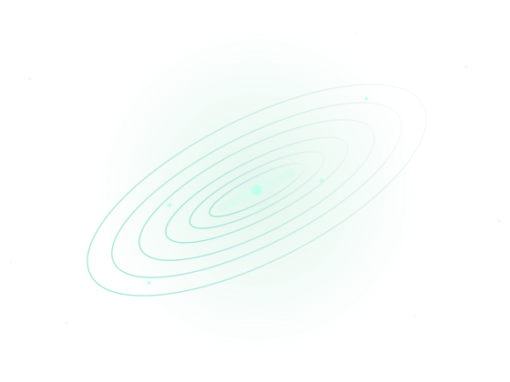

STRUCTURE & EVOLUTION
Polar ring galaxies
Using resolved UV-to-infrared observations and simulations to understand the formation, stellar populations, and evolutionary pathways of galaxies with misaligned rings.
Dynamics · SED fittingI study how galaxies form, evolve, and remember their past.
I'm an astrophysicist and Postdoctoral Fellow at the Indian Institute of Astrophysics, Bengaluru. My research combines multi-wavelength observations, image analysis, and cosmological simulations to understand the structure and evolution of galaxies.
My PhD work explored the evolution of polar ring galaxies. I now investigate the unusually extended disks of giant low-surface-brightness galaxies, their star formation, and the ways stellar bars and other faint structures can preserve clues about a galaxy's history.

I am interested in the physical processes that shape galactic structure, stellar populations, and star formation across cosmic time.
Using resolved UV-to-infrared observations and simulations to understand the formation, stellar populations, and evolutionary pathways of galaxies with misaligned rings.
Dynamics · SED fittingInvestigating extended ultraviolet emission, faint outer disks, and low-efficiency star formation in giant low-surface-brightness galaxies.
UV imaging · Star formationExploring rings, ovals, and lenses as possible signatures of past bar-driven evolution, with image decomposition and comparisons to simulations.
Morphology · WaveletsHow I work
Combining observational astronomy with Python-based analysis, spectral energy distribution modelling, structural decomposition, and cosmological simulations.
A few papers spanning galaxy structure, polar rings, stellar populations, and star formation. For a complete list, visit Google Scholar ↗.
Krishna R. Akhil et al.
Krishna R. Akhil, Sreeja S. Kartha & Blesson Mathew
Thomas Robin, Sreeja S. Kartha, Akhil Krishna R et al.
Indian Institute of Astrophysics · Bengaluru, India
Investigating galaxy evolution, extended disks, and star formation in low-surface-brightness systems.
CHRIST (Deemed to be University) · Bengaluru, India
Thesis: Tracing the Evolution of Polar Ring Galaxies through Multi-wavelength Observations and Cosmological Simulations.
Computational methods · Astrophysics laboratories
Teaching Python-based computational methods and astronomy labs, and mentoring student projects on galaxies and stellar populations.
I'm always happy to connect with researchers, students, and collaborators who are curious about galaxies, astronomical data, and the stories hidden in their structures.
akhil.krishna@iiap.res.in